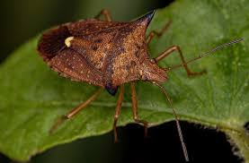

oque são pragas agrícolas?
As pragas agrícolas são capazes de reduzir a produtividade e/ou qualidade dos cultivos agrícolas a partir da sua alimentação.
As pragas agrícolas são capazes de reduzir a produtividade e/ou qualidade dos cultivos agrícolas a partir da sua alimentação.
Rotação de culturas: deve-se analisar minuciosamente quais culturas reduzem a sobrevivência da praga. Afinal, a lagarta é capaz de se alimentar de muitas das culturas normalmente utilizadas na rotação; Uso de variedades resistentes ou mais tolerantes ao inseto (sempre adotando área de refúgio); Controle biológico e inseticidas: importante ressaltar que inseticidas à base de Bt em cultivares (como o caso do milho, que possui a tecnologia Bt), não devem ser utilizados no controle da lagarta. Porém, o uso de inseticidas deve ser feito com a rotação dos mecanismos de ação. Isso vai evitar o surgimento de populações resistentes.

Nas aplicações para o controle de lagartas, use produtos que tenham modo de ação diferente dos inseticidas utilizados no controle de percevejos. Para o controle de ambos, os mesmos ingredientes ativos podem ser utilizados. Desta forma, é importante não utilizar os mesmos ingredientes ativos. Assim, você evita problemas com a resistência de pragas aos inseticidas. Faça aplicações somente nas áreas que apresentam densidade populacional que corresponde ao nível de ação. Para isso, faça o monitoramento da infestação. O monitoramento com mapas de danos pode ser feito digitalmente e diretamente na área pelos funcionários da fazenda. Além disso, é importante analisar quais plantas podem ser utilizadas na rotação de culturas. Afinal, elas não podem ser hospedeiras do percevejo.
No Brasil, foram encontrados casos de resistência da praga aos inseticidas piretroides. Por isso, os manejos mais indicados para a lagarta são: Uso de plantas resistentes Bt (sempre utilizando área de refúgio); Rotação de culturas; Vazio sanitário; Manejo dos inimigos naturais de pragas; Manejo Integrado de Pragas. O controle químico também deve ser utilizado. Porém, não se esqueça da rotação de mecanismos de ação. Evite o uso de inseticidas fosforados e piretroides no início da cultura, já que são considerados de tóxicos para os inimigos naturais.
O não revolvimento do solo, característico do sistema plantio direto, favorece o desenvolvimento e sobrevivência dos corós. A rotação de culturas com plantas não hospedeiras também pode auxiliar no controle. Algumas espécies de crotalária, por exemplo, tem ação tóxica aos corós e podem ser utilizadas. O tratamento de sementes com inseticidas é uma medida complementar. Porém, não é efetivo quando as larvas estão maiores. A população de corós que justifica o controle é diferente a depender da espécie em que ocorre. Os corós não se distribuem uniformemente na área. Sendo assim, você pode aplicar o controle químico apenas nos locais de ocorrência. Alguns dos inseticidas recomendados para o controle de diferentes espécies de corós, grupos químicos e ingredientes ativos e culturas em que são recomendadas sua aplicação
O MIP também é recomendado para o controle. Você pode utilizar o controle cultural, com cultivo de espécies não hospedeiras. O monitoramento da mosca-branca também é necessário, e pode ser realizado com o uso de armadilhas amarelas que atraem os adultos. Inseticidas do grupo químico dos tetranortripenóides são recomendados para o controle em todas as culturas. Os fungos entomopatogênicos Beauveria bassiana e Isaria fumosorosea também são recomendados para o controle. Cultivares resistentes também são uma alternativa de controle eficiente. Em caso de observação e controle ineficiente com inseticidas, é necessário investigar qual a raça ou biótipo que está ocorrendo na área. Algumas raças ou biótipos da mosca-branca são resistentes a diversos produtos.